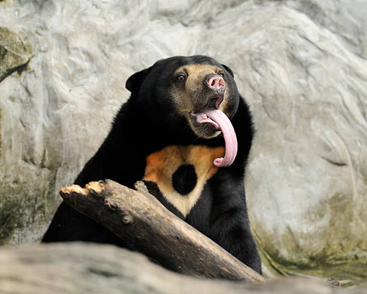
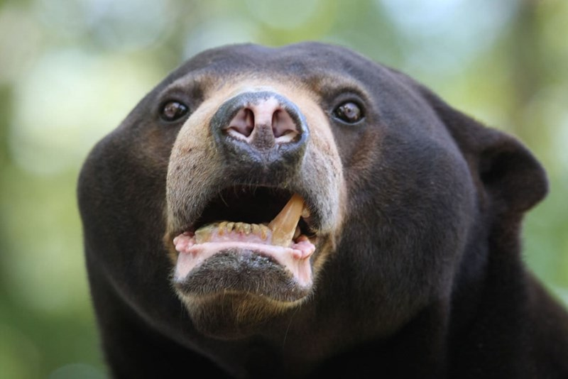

Sun Bears
Helarctos malayanus
Sun bear sticking out it's tongue
Sun bears are named for the golden patches of fur on their chests, which some people say resemble a rising sun. While their tongues may be extra-big, sun bears are actually the smallest bear species. Males grow about 5 feet long and weigh up to 150 pounds—that’s about half the size of an adult American black bear.
These animals live in wooded areas of Southeast Asia. Strong and agile, sun bears are good at climbing trees. They spend a lot of time in tree canopies and even build "beds" of twigs and leaves on the branches to sleep in.
Diet
- Ants.
- Bees.
- Beetles.
- Honey.
- Termites.
- Plant material such as seeds and several kinds of fruits.
- Vertebrates such as birds and deer are also eaten occasionally.
